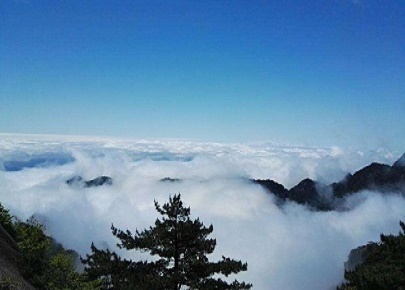

morly旅游圈
黄山位于安徽南部黄山市境内，山境南北长约40千米，东西宽约30千米，总面积约1200平方千米。其中，黄山风景区面积160.6平方千米，地跨东经118°01'—118°17'，北纬30°01'—30°18'，东起黄狮，西至小岭脚，北始二龙桥，南达汤口镇，分为温泉、云谷、玉屏、北海、松谷、钓桥、浮溪、洋湖、福固九个管理区。 缓冲区面积490.9平方千米，以与景区相邻的五镇一场（黄山区汤口镇、谭家桥镇、三口镇、耿城镇、焦村镇和洋湖林场）的行政边界为界。
黄山处于亚热带季风气候区内，山高谷深，气候呈垂直变化，局部地形对气候起主导作用，云雾多、湿度大、降水多，形成特殊的山区季风气候，夏无酷暑，冬少严寒。山顶年均降水2369.3毫米，年均雨日180.6天，多集中于4-6月，积雪日32.9天，雾日259天，大风118.7天，年均温7.9℃，夏季最高气温27℃，冬季最低气温-22℃，最长无雨期40天。景区林木茂密，溪瀑众多，大气质量常年保持Ⅰ级，空气PM2.5日均浓度5微克/立方米，空气负氧离子浓度长年稳定在2万个/cm3以上，有“天然氧吧”之称。 黄山经历了造山运动和地壳抬升，以及冰川和自然风化作用，才形成其峰林结构。黄山有七十二峰，素有“三十六大峰，三十六小峰”之称，主峰莲花峰海拔高达1864.8米，与光明顶、天都峰并称三大黄山主峰，为36大峰之一。 黄山山体主要由燕山期花岗岩构成，垂直节理发育，侵蚀切割强烈，断裂和裂隙交错，长期受水溶蚀，形成花岗岩洞穴与孔道。全山有岭30处、岩22处、洞7处、关2处。黄山的第四纪冰川遗迹主要分布在前山的东南部。 黄山集八亿年地质史于一身，融峰林地貌、冰川遗迹于一体，兼有花岗岩造型石、花岗岩洞室、泉潭溪瀑等丰富而典型的地质景观。前山岩体节理稀疏，多球状风化；后山岩体节理稠密，多柱状风化，山体峻峭，形成了“前山雄伟、后山秀丽”的地貌特征。
黄山的发展与宗教有密切的关系。关于轩辕黄帝来山炼丹的故事流传千年，至今还留下与上述道教神仙故事有关的峰名，如轩辕峰、容成峰、浮丘峰等。黄山山名，本身就与黄帝炼丹之说有关。另外，佛教在南朝刘宋时传入黄山，历代先后修建寺庵近百座。在所有的寺庙之中，祥符寺、慈光寺、翠微寺和掷钵禅院，号称黄山“四大丛林”。黄山历代僧众也出了许多能诗善画之人，如黄山画派的创始者渐江、雪庄等。 黄山因传说中华民族的始祖轩辕黄帝曾在此修炼升仙。唐天宝六年（公元747年）六月十六日改现名，被唐玄宗钦定为黄山的生日。
中国黄山国际旅游节：每年在黄山市举行一次。主要内容有：黄山风光之旅、黄山古民居之旅、中国历史文化名城歙县之旅、道教圣地齐云山之旅、太平湖――千岛湖胜水之旅，还有徽州民风民俗表演、黄山书画展、黄山旅游摄影展、安徽名优产品、土特产品及旅游产品大联展等。
黄山白云景区位于黄山西部，面积1655公顷，南起云门溪上的续古桥，北至伏牛岭，东起云际、石人二峰，西至双河口畔。景区以钓桥庵为中心，钓桥庵位于石人峰下，白云、白门两溪汇合处，海拔610米，钓桥庵又名白云庵，明前为道院，清康熙间改为佛庵，后沿用地名至今。为将白云景区、松谷景区和北海景区联为一体，黄山管委会组织开发了新景区——西海大峡谷。“千峰划然开，紫翠呈万状”的黄山西海大峡谷是黄山又一绝胜处，景区总面积约16.5平方公里。
黄山不仅是一座美丽的自然之山，还是一座丰富的艺术宝库。自古以来，人们游览黄山，建设黄山，歌颂黄山，留下了丰厚的文化遗产，概括起来就是遗存、书画、文学、传说、名人“五胜”。
内容整理至网络，如有侵权，请联系我们！1255394075@qq.com
